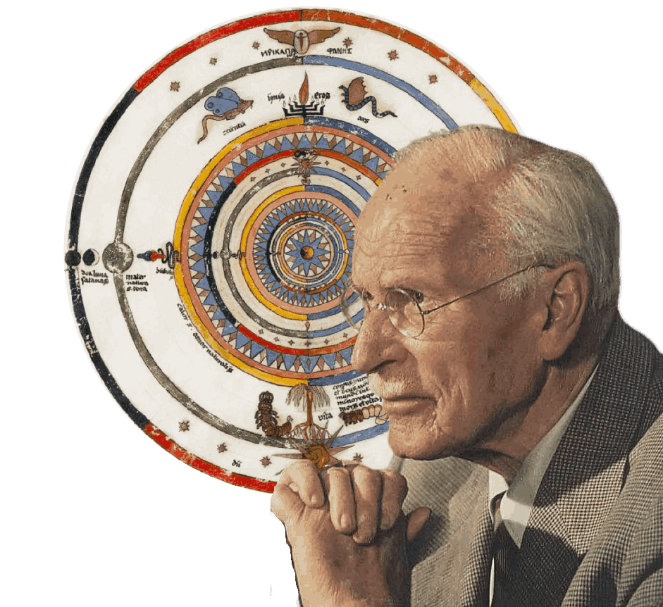

Onde nos encontramos
Consultório
Para quem optar pelo atendimento presencial, estamos localizados na Praça Saens Peña — um espaço pensado para oferecer conforto, segurança e privacidade durante os atendimentos.


Psicologia Analítica Junguiana
Atendimento online e presencial para adolescentes, adultos e idosos — Rio de Janeiro.

Como funciona
A Psicologia Analítica — também chamada de Terapia Jungiana — é uma abordagem voltada ao autoconhecimento e ao equilíbrio emocional. Ela não busca apenas "resolver problemas": vai além, ajudando a reconhecer padrões de comportamento, acolher emoções difíceis e desenvolver recursos internos que a pessoa ainda não reconhece em si mesma.
Compreenda padrões emocionais e comportamentais que moldam a sua história e suas relações.
Desenvolva ferramentas para lidar com ansiedade, conflitos internos e transições de vida.
Ative potenciais internos e construa uma relação mais saudável e consciente consigo mesmo.
Sobre mim
Sou formada em Psicologia com foco em Psicologia Analítica (Junguiana) e tenho pós-graduação em Saúde Mental. Atendo presencialmente e online adolescentes, jovens, adultos e idosos, oferecendo um espaço de escuta, reflexão e desenvolvimento pessoal.
O trabalho terapêutico é voltado para compreender melhor as emoções e os desafios do cotidiano — sempre respeitando o ritmo e a singularidade de cada pessoa.
Onde nos encontramos
Para quem optar pelo atendimento presencial, estamos localizados na Praça Saens Peña — um espaço pensado para oferecer conforto, segurança e privacidade durante os atendimentos.
Vamos conversar
Quer conhecer mais sobre o meu trabalho e a Psicologia Analítica e como ela pode te ajudar ? Acesse os canais abaixo e entre em contato para marcar a sua sessão.
danielacoutinho.psi@gmail.com
(21) 995512802
CRP 05/62767
Para sua praticidade, disponibilizo minha agenda atualizada com horários de segunda a sábado pelo Psicotime. Você escolhe o melhor horário, faz seu cadastro e, próximo à sessão, receberá um lembrete pelo WhatsApp da plataforma.
Agendar pelo Psicotime